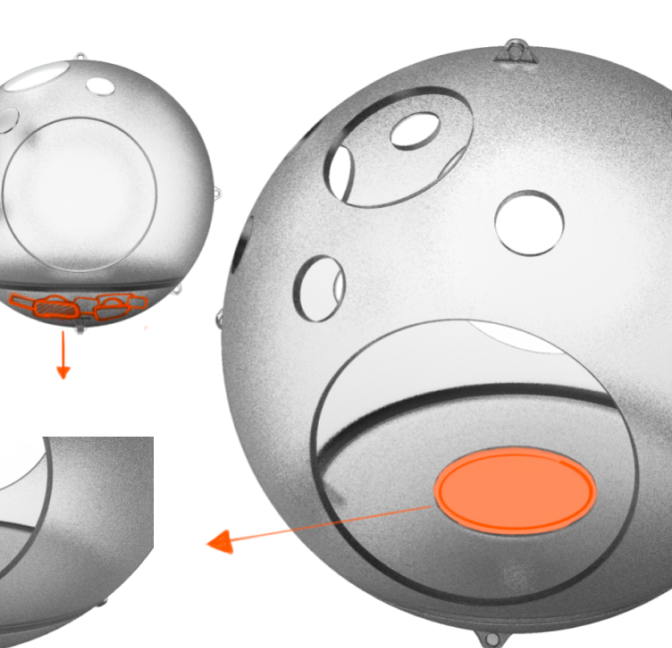

LUO SHAN
luoshan3398@qq.com
Regrettably, it seems that I do not possess the craftsman spirit of "investigating things to achieve knowledge." I have conducted relatively little specialized research on a single object. I have chosen to present here a "spherical magic carpet" for aerial camping.
遗憾，貌似我不具有“格物致知”的匠人精神，对一个物体的专门的研究比较少，我挑选了一个空中露营的“球形魔毯”放在这里。
